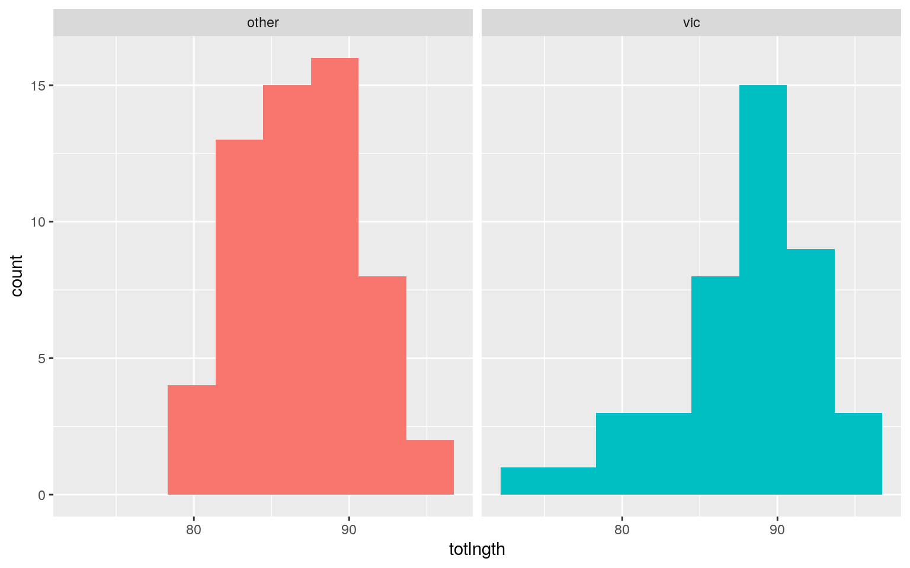
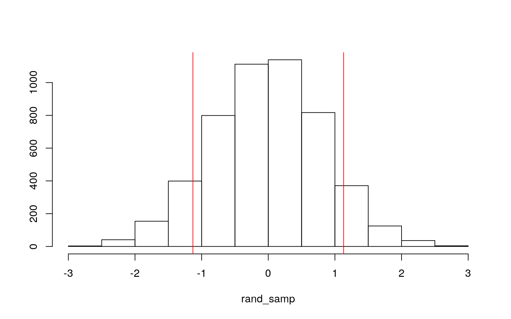
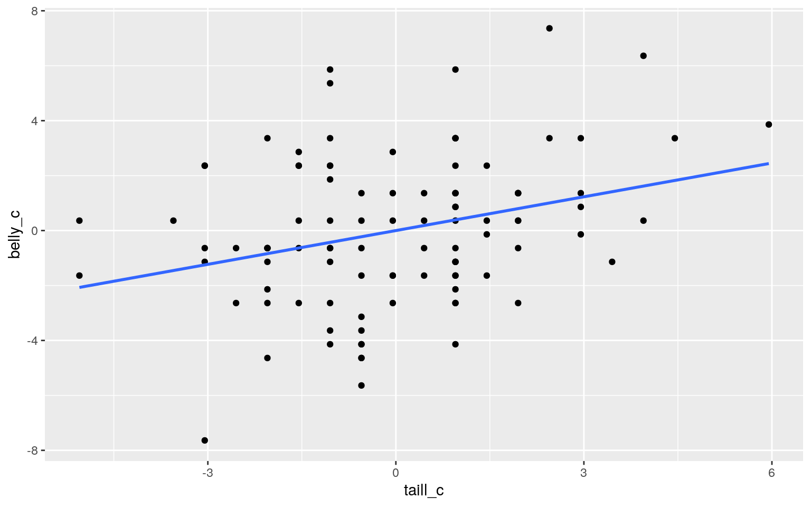
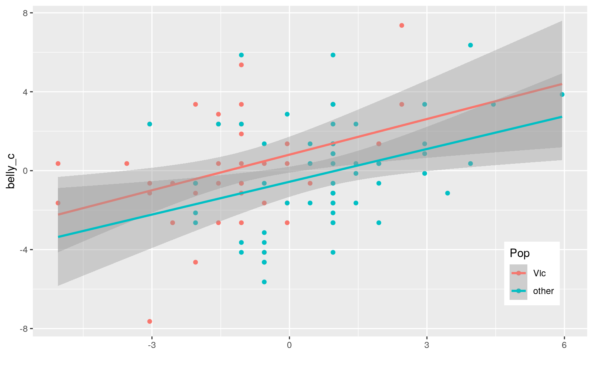
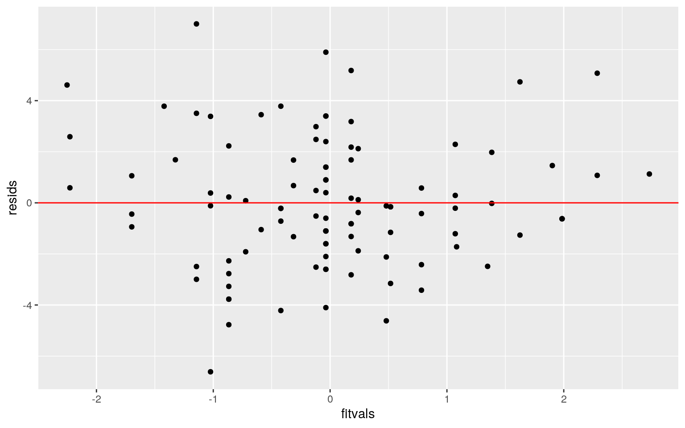
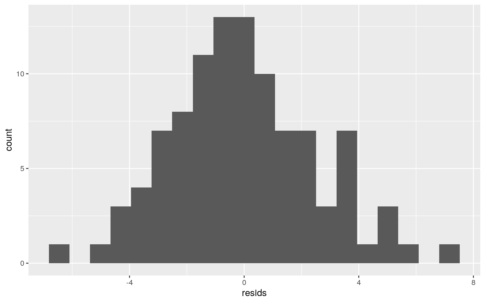
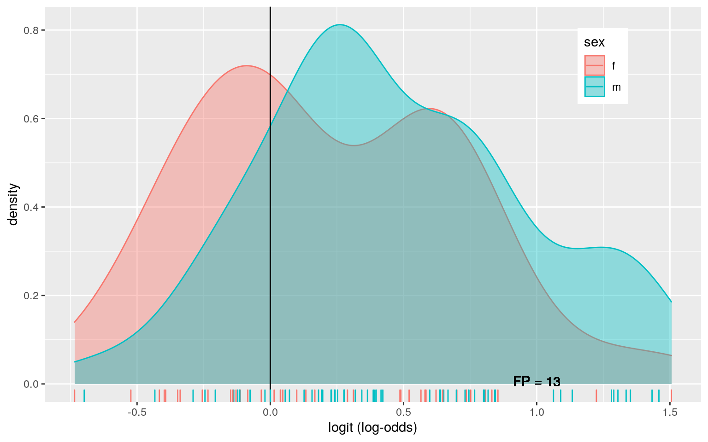
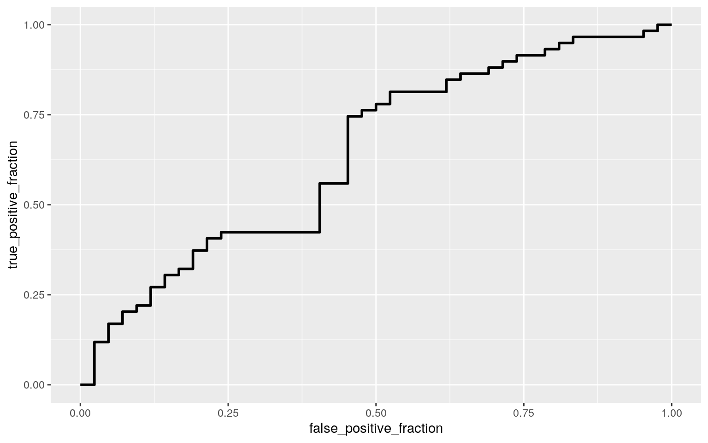

This is an R Markdown document. Markdown is a simple formatting syntax for authoring HTML, PDF, and MS Word documents. For more details on using R Markdown see http://rmarkdown.rstudio.com.
When you click the Knit button a document will be generated that includes both content as well as the output of any embedded R code chunks within the document. You can embed an R code chunk like this:
library(DAAG)
possum$case <- NULL
possum <- possum%>%drop_na()Possum dataset: This dataset comes from 104 possums (3 removed due to NAs) captured in Australia. They were captured in 2 areas, Victoria or elsewhere. Their sexes were recorded, and then ages and many different physical measurements, such as total length, were determined. The site variable refers to seven sites at which the possums were captured, 2 sites in the Victoria population and 5 sites elsewhere. 1 MANOVA test and 11 ANOVAs were run. Using the Bonferroni method for controlling type I errors, the significant p value of 0.05 is divided by 12 to get 0.004
#MANOVA
possum_man <- manova(cbind(site,age,hdlngth,skullw,totlngth,taill,footlgth,earconch,eye,chest,belly)~sex, data=possum)
summary(possum_man)## Df Pillai approx F num Df den Df Pr(>F)
## sex 1 0.23084 2.4283 11 89 0.01078 *
## Residuals 99
## ---
## Signif. codes: 0 '***' 0.001 '**' 0.01 '*' 0.05 '.' 0.1
' ' 1summary.aov(possum_man)## Response site :
## Df Sum Sq Mean Sq F value Pr(>F)
## sex 1 32.59 32.591 6.1151 0.01511 *
## Residuals 99 527.63 5.330
## ---
## Signif. codes: 0 '***' 0.001 '**' 0.01 '*' 0.05 '.' 0.1
' ' 1
##
## Response age :
## Df Sum Sq Mean Sq F value Pr(>F)
## sex 1 1.23 1.2263 0.3321 0.5657
## Residuals 99 365.57 3.6926
##
## Response hdlngth :
## Df Sum Sq Mean Sq F value Pr(>F)
## sex 1 17.45 17.446 1.4149 0.2371
## Residuals 99 1220.69 12.330
##
## Response skullw :
## Df Sum Sq Mean Sq F value Pr(>F)
## sex 1 10.48 10.482 1.0898 0.299
## Residuals 99 952.18 9.618
##
## Response totlngth :
## Df Sum Sq Mean Sq F value Pr(>F)
## sex 1 40.93 40.930 2.3553 0.128
## Residuals 99 1720.39 17.378
##
## Response taill :
## Df Sum Sq Mean Sq F value Pr(>F)
## sex 1 0.35 0.3477 0.0886 0.7666
## Residuals 99 388.40 3.9233
##
## Response footlgth :
## Df Sum Sq Mean Sq F value Pr(>F)
## sex 1 36.64 36.642 1.898 0.1714
## Residuals 99 1911.26 19.306
##
## Response earconch :
## Df Sum Sq Mean Sq F value Pr(>F)
## sex 1 29.46 29.463 1.8014 0.1826
## Residuals 99 1619.18 16.355
##
## Response eye :
## Df Sum Sq Mean Sq F value Pr(>F)
## sex 1 5.041 5.0407 4.6624 0.03324 *
## Residuals 99 107.032 1.0811
## ---
## Signif. codes: 0 '***' 0.001 '**' 0.01 '*' 0.05 '.' 0.1
' ' 1
##
## Response chest :
## Df Sum Sq Mean Sq F value Pr(>F)
## sex 1 5.67 5.6724 1.3946 0.2405
## Residuals 99 402.66 4.0673
##
## Response belly :
## Df Sum Sq Mean Sq F value Pr(>F)
## sex 1 6.55 6.5514 0.8794 0.3506
## Residuals 99 737.51 7.4496possum%>%group_by(sex)%>%summarize(mean(site),mean(eye))## # A tibble: 2 x 3
## sex `mean(site)` `mean(eye)`
## <fct> <dbl> <dbl>
## 1 f 3 14.8
## 2 m 4.15 15.2A MANOVA test indicated that some numeric variables had a mean difference across levels from the sex variable. After performing univariate ANOVAs, the numeric variables that had these mean differences were determined to be site and eye. Site had a p-value of 0.015, and eye had a p-value of 0.033. 1 MANOVA test and 11 ANOVAs were run. Using the Bonferroni method for controlling type I errors, the significant p value of 0.05 is divided by 12 to get 0.004. Based on this new value, neither site or eye variables were significant. The MANOVA assumption of random sampling and independent observations is likely to have been met in this dataset, but without knowing exactly how the possums were collected, this can’t be known for sure. Another MANOVA assumption includes there being no extreme univaraite or multivariate outliers, which this analysis seems to fit.
#Randomization
library(dplyr)
vic <- possum%>%slice(1:43)
other <- possum%>%slice(44:101)
other_tot <- other%>%select(totlngth)%>%pull
vic_tot <- vic%>%select(totlngth)%>%pull
vic_totc <- c(vic_tot)
other_totc <- c(other_tot)
pop_length<-data.frame(Pop=c(rep("vic",43),rep("other",58)),totlngth=c(vic_tot,other_tot))
head(pop_length)## Pop totlngth
## 1 vic 89.0
## 2 vic 91.5
## 3 vic 95.5
## 4 vic 92.0
## 5 vic 85.5
## 6 vic 90.5ggplot(pop_length,aes(totlngth,fill=Pop)) + geom_histogram(bins = 8) + facet_wrap(~Pop, ncol = 2) + theme(legend.position = "none")
mean(vic_tot)#larger## [1] 87.9186mean(other_tot)## [1] 86.78793mean(vic_tot)-mean(other_tot)## [1] 1.130674pop_length%>%group_by(Pop)%>%
summarize(means=mean(totlngth))%>%summarize(`mean_diff:`=diff(means))## # A tibble: 1 x 1
## `mean_diff:`
## <dbl>
## 1 1.13head(perm1<-data.frame(Pop=pop_length$Pop,totlngth=sample(pop_length$totlngth)))## Pop totlngth
## 1 vic 89.0
## 2 vic 82.0
## 3 vic 82.5
## 4 vic 80.5
## 5 vic 86.0
## 6 vic 86.5perm1%>%group_by(Pop)%>%
summarize(means=mean(totlngth))%>%summarize(`mean_diff:`=diff(means))## # A tibble: 1 x 1
## `mean_diff:`
## <dbl>
## 1 -1.03rand_samp <- vector()
new_poss <- possum
for (i in 1:5000) {
new_poss <- data.frame(totlngth=sample(pop_length$totlngth),Pop=pop_length$Pop)
rand_samp[i]<-mean(new_poss[new_poss$Pop=="vic",]$totlngth)-
mean(new_poss[new_poss$Pop=="other",]$totlngth)
}
head(rand_samp)## [1] 0.4300722 0.3288292 0.3004812 1.3007618 1.6773857
0.3814755hist(rand_samp,main="",ylab=""); abline(v=c(-1.131,1.131),col="red")
mean(rand_samp>1.131 | rand_samp < -1.131)## [1] 0.1738The null hypothesis for this test would be: There is no difference in total body length of the possums between males and females. The alternative hypothesis for this test would be: There is difference in total body length of the possums between males and females. The significance value of the difference of means is 0.1722, greater than 0.05, so the null hypothesis is accepted, it cannot be stated that male and female possums differ significantly in total body length.
#Linear Regression
library(sandwich);library(lmtest)
possum$belly_c <- possum$belly - mean(possum$belly)
possum$taill_c <- possum$taill - mean(possum$taill)
glimpse(possum)## Rows: 101
## Columns: 15
## $ site <dbl> 1, 1, 1, 1, 1, 1, 1, 1, 1, 1, 1, 1, 1, 1,
1, 1, 1, 1, 1, 1, 1, 1, 1, 1, 1, 1, 1,…
## $ Pop <fct> Vic, Vic, Vic, Vic, Vic, Vic, Vic, Vic, Vic,
Vic, Vic, Vic, Vic, Vic, Vic, Vic, …
## $ sex <fct> m, f, f, f, f, f, m, f, f, f, f, f, m, m, m,
m, f, m, f, f, f, m, f, m, m, m, f,…
## $ age <dbl> 8, 6, 6, 6, 2, 1, 2, 6, 9, 6, 9, 5, 5, 3, 5,
4, 1, 2, 5, 4, 3, 3, 4, 2, 3, 7, 2,…
## $ hdlngth <dbl> 94.1, 92.5, 94.0, 93.2, 91.5, 93.1,
95.3, 94.8, 93.4, 91.8, 93.3, 94.9, 95.1, 95…
## $ skullw <dbl> 60.4, 57.6, 60.0, 57.1, 56.3, 54.8, 58.2,
57.6, 56.3, 58.0, 57.2, 55.6, 59.9, 57…
## $ totlngth <dbl> 89.0, 91.5, 95.5, 92.0, 85.5, 90.5,
89.5, 91.0, 91.5, 89.5, 89.5, 92.0, 89.5, 91…
## $ taill <dbl> 36.0, 36.5, 39.0, 38.0, 36.0, 35.5, 36.0,
37.0, 37.0, 37.5, 39.0, 35.5, 36.0, 36…
## $ footlgth <dbl> 74.5, 72.5, 75.4, 76.1, 71.0, 73.2,
71.5, 72.7, 72.4, 70.9, 77.2, 71.7, 71.0, 74…
## $ earconch <dbl> 54.5, 51.2, 51.9, 52.2, 53.2, 53.6,
52.0, 53.9, 52.9, 53.4, 51.3, 51.0, 49.8, 53…
## $ eye <dbl> 15.2, 16.0, 15.5, 15.2, 15.1, 14.2, 14.2,
14.5, 15.5, 14.4, 14.9, 15.3, 15.8, 15…
## $ chest <dbl> 28.0, 28.5, 30.0, 28.0, 28.5, 30.0, 30.0,
29.0, 28.0, 27.5, 31.0, 28.0, 27.0, 28…
## $ belly <dbl> 36.0, 33.0, 34.0, 34.0, 33.0, 32.0, 34.5,
34.0, 33.0, 32.0, 34.0, 33.0, 32.0, 31…
## $ belly_c <dbl> 3.3613861, 0.3613861, 1.3613861,
1.3613861, 0.3613861, -0.6386139, 1.8613861, 1.…
## $ taill_c <dbl> -1.04950495, -0.54950495, 1.95049505,
0.95049505, -1.04950495, -1.54950495, -1.0…lin_fit <- lm(belly_c~Pop*taill_c, data = possum)
coef(lin_fit)## (Intercept) Popother taill_c Popother:taill_c
## 0.8116722 -1.3744350 0.6018051 -0.0479891summary(lin_fit)##
## Call:
## lm(formula = belly_c ~ Pop * taill_c, data = possum)
##
## Residuals:
## Min 1Q Median 3Q Max
## -6.6151 -1.6023 -0.2099 1.6747 7.0054
##
## Coefficients:
## Estimate Std. Error t value Pr(>|t|)
## (Intercept) 0.81167 0.46356 1.751 0.08312 .
## Popother -1.37444 0.59616 -2.305 0.02327 *
## taill_c 0.60181 0.22467 2.679 0.00868 **
## Popother:taill_c -0.04799 0.30017 -0.160 0.87331
## ---
## Signif. codes: 0 '***' 0.001 '**' 0.01 '*' 0.05 '.' 0.1
' ' 1
##
## Residual standard error: 2.575 on 97 degrees of freedom
## Multiple R-squared: 0.1353, Adjusted R-squared: 0.1085
## F-statistic: 5.059 on 3 and 97 DF, p-value: 0.00268possum%>%ggplot(aes(taill_c,belly_c))+geom_point()+geom_smooth(method = 'lm',se=F)#Says if both explanatory are numeric then refer to slides. Does this mean if one is binary categorical it's not included in this plot, because I don't see how it would be unless making two plots.
possum%>%ggplot(aes(x=taill_c, y=belly_c,group=Pop)) + geom_point(aes(color=Pop)) +
geom_smooth(method = "lm",fullrange=T,aes(color=Pop)) +
theme(legend.position = c(.9,.19))+xlab("")
resids<-lin_fit$residuals
fitvals<-lin_fit$fitted.values
ggplot()+geom_point(aes(fitvals,resids))+geom_hline(yintercept=0, color='red')
ggplot()+geom_histogram(aes(resids), bins=20)
summary(lin_fit)##
## Call:
## lm(formula = belly_c ~ Pop * taill_c, data = possum)
##
## Residuals:
## Min 1Q Median 3Q Max
## -6.6151 -1.6023 -0.2099 1.6747 7.0054
##
## Coefficients:
## Estimate Std. Error t value Pr(>|t|)
## (Intercept) 0.81167 0.46356 1.751 0.08312 .
## Popother -1.37444 0.59616 -2.305 0.02327 *
## taill_c 0.60181 0.22467 2.679 0.00868 **
## Popother:taill_c -0.04799 0.30017 -0.160 0.87331
## ---
## Signif. codes: 0 '***' 0.001 '**' 0.01 '*' 0.05 '.' 0.1
' ' 1
##
## Residual standard error: 2.575 on 97 degrees of freedom
## Multiple R-squared: 0.1353, Adjusted R-squared: 0.1085
## F-statistic: 5.059 on 3 and 97 DF, p-value: 0.00268coeftest(lin_fit, vcov = vcovHC(lin_fit))[,1:2]## Estimate Std. Error
## (Intercept) 0.8116722 0.4540261
## Popother -1.3744350 0.6369932
## taill_c 0.6018051 0.2350711
## Popother:taill_c -0.0479891 0.3258061summary(lin_fit)$coef[,1:2]## Estimate Std. Error
## (Intercept) 0.8116722 0.4635608
## Popother -1.3744350 0.5961639
## taill_c 0.6018051 0.2246690
## Popother:taill_c -0.0479891 0.3001669The coefficient estimates in this regression model suggests that possums from the “other” population have belly girths that are, on average, 1.37cm less than possums from the Victoria population. For every increase of 1 cm in tail length, possums have an increase of 0.60 cm in belly girth. The intercept suggests that if all variables were at a value of zero (which would not be possible), then the belly girth would be 0.81 cm. The interaction coefficient suggests that the slope for the “other” population on belly girth is 0.048 lower for every 1 cm increase in tail length. Based on the adjusted R-squared value, the model predicts 10.85% of the variation in the response variable (belly girth). Several graphs above show that the assumptions for linear regression of linearity, normality, and homoskedasticity are all met. Independent observations/random sample is just based on how the data was gathered. When recomputing the regression results with robust standard errors no changes in values occurred in the estimate values from the regular regression stats. The standard error stats did change, with the robust standard error regression having slightly higher values for both explanatory variables and the interaction, but a lower standard error for the intercept standard error. When using the robust standard errors, the p-value was 0.0027, so the result is significant.
#Bootstrapping
samp_boot <- replicate(5000, {
boot_dat <- sample_frac(possum, replace = T)
boot_fit <- lm(belly_c~Pop*taill_c, data = boot_dat)
coef(boot_fit)
})
samp_boot %>% t %>% as.data.frame %>% summarize_all(sd)## (Intercept) Popother taill_c Popother:taill_c
## 1 0.4332294 0.6135419 0.2189089 0.312835boot_fit2 <- lm(belly_c~Pop*taill_c,data = possum)
resids2<-boot_fit2$residuals
boot_fitted<-boot_fit2$fitted.values
resid_resamp<-replicate(5000,{
new_resids<-sample(resids2,replace = TRUE)
possum$new_y<-boot_fitted+new_resids
new_fit<-lm(new_y~Pop*taill_c,data = possum)
coef(new_fit)
})
resid_resamp%>%t%>%as.data.frame%>%summarize_all(sd)## (Intercept) Popother taill_c Popother:taill_c
## 1 0.4562176 0.5837967 0.2183922 0.2953627resid_resamp%>%t%>%as.data.frame%>%pivot_longer(1:3)%>%group_by(name)%>% summarize(lower=quantile(value,.025), upper=quantile(value,.975))## # A tibble: 3 x 3
## name lower upper
## <chr> <dbl> <dbl>
## 1 (Intercept) -0.0847 1.70
## 2 Popother -2.50 -0.214
## 3 taill_c 0.166 1.03#Bootstrap Comparison
coeftest(lin_fit)[,1:2]#Normal SEs## Estimate Std. Error
## (Intercept) 0.8116722 0.4635608
## Popother -1.3744350 0.5961639
## taill_c 0.6018051 0.2246690
## Popother:taill_c -0.0479891 0.3001669coeftest(lin_fit, vcov=vcovHC(lin_fit))[,1:2]#Robust SEs## Estimate Std. Error
## (Intercept) 0.8116722 0.4540261
## Popother -1.3744350 0.6369932
## taill_c 0.6018051 0.2350711
## Popother:taill_c -0.0479891 0.3258061samp_boot%>%t%>%as.data.frame%>%summarize_all(sd)#Bootstrapped SEs## (Intercept) Popother taill_c Popother:taill_c
## 1 0.4332294 0.6135419 0.2189089 0.312835resid_resamp%>%t%>%as.data.frame%>%summarize_all(sd)#Bootstrapped SEs (Residuals)## (Intercept) Popother taill_c Popother:taill_c
## 1 0.4562176 0.5837967 0.2183922 0.2953627When bootstrapping, the “Other” population is no longer negatively correlated with belly girth, and instead suggests an increase an increase of around 0.6 cm. Tail length is still positively correlated with belly girth, but to a lesser degree. The non boostrapped data suggests that a 1cm increase in tail length indicates an increase of around 0.6 cm for belly girth. The bootstrapped data suggests that a 1 cm increase in tail length indicates an increase of aroun 0.22 cm in belly girth. Additionally, with the bootstrapped data, interaction between population “other” and tail length is now positively correlated. Instead of the slope of the “other” population on belly girth being 0.48 lower per 1 cm increase in tail length, the boostrapped data indicates that the slope actually goes up by about 0.3.
#Logistic Regression
library(lmtest)
poss_fit <- glm(sex~footlgth + hdlngth,data = possum,family = binomial(link = "logit"))
coeftest(poss_fit)##
## z test of coefficients:
##
## Estimate Std. Error z value Pr(>|z|)
## (Intercept) -4.454911 5.732281 -0.7772 0.43706
## footlgth -0.109270 0.053096 -2.0580 0.03959 *
## hdlngth 0.132554 0.069420 1.9094 0.05620 .
## ---
## Signif. codes: 0 '***' 0.001 '**' 0.01 '*' 0.05 '.' 0.1
' ' 1log_probs<-predict(poss_fit,type = "response")
table(predict=as.numeric(log_probs>.5),truth=possum$sex)%>%addmargins## truth
## predict f m Sum
## 0 16 10 26
## 1 26 49 75
## Sum 42 59 101possum$logit<-predict(poss_fit,type="link")
possum%>%ggplot()+geom_density(aes(logit,color=sex,fill=sex), alpha=.4)+
theme(legend.position=c(.85,.85))+geom_vline(xintercept=0)+xlab("logit (log-odds)")+
geom_rug(aes(logit,color=sex))+
geom_text(x=-5,y=.07,label="TN = 431")+
geom_text(x=-1.75,y=.008,label="FN = 19")+
geom_text(x=1,y=.006,label="FP = 13")+
geom_text(x=5,y=.04,label="TP = 220")
sensitivity<-49/59
specificty<-16/42
library(plotROC)
ROCplot<-ggplot(possum)+geom_roc(aes(d=sex,m=log_probs), n.cuts = 0)
ROCplot
calc_auc(ROCplot)## PANEL group AUC
## 1 1 -1 0.6404358The coefficients in this logistic regression suggests that a 1 mm increase in foot length indicates a decrease of 0.11 in the sex statistic. This essentially means the possum is more likely to be female. A 1 mm increase in head length indicates an increase of 0.13 in the sex statistic which means the possum is more likely to be male. The intercept value is -4.455, which means if foot length and head length were zero, the sex statistic would be -4.455, but this is not possible. From the confusion matrix, various values can be determined. The accuracy is 16+49/101 = 0.64, the sensitivity is 49/59 = 0.83, the specificity is 16/42 = 0.38, the precision is 49/75 = 0.65, and the auc is 0.64. The accuracy value indicates the proportion of the possums that were correctly predicted as either male or female, meaning 64% of the time, this model could determine sex based on foot length and head length. The sensitivity indicates the proportion of the positivie cases (in this instance males) that the model correctly guessed. The specificity indicates the proportion of the females that were correctly guessed. The low value of 0.38 that means the model only correctly identified the females 38% of the time, so possums were overidentified as male. The specificity refers to the proportion of possums identified as male that actually were male. An AUC of 0.64 is fairly low and falls into the “poor” category. This essentially means the model was not particularly effective at estimating sex based on foot length and head length.
#Logistic Regression 2
poss_fit2 <- glm(sex~(.),data = possum,family = binomial(link = "logit"))
coeftest(poss_fit2)##
## z test of coefficients:
##
## Estimate Std. Error z value Pr(>|z|)
## (Intercept) -25.248127 10.948537 -2.3061 0.02111 *
## site 0.424196 0.281374 1.5076 0.13166
## Popother 1.175486 1.981689 0.5932 0.55306
## age -0.080290 0.138858 -0.5782 0.56312
## hdlngth 0.237592 0.135971 1.7474 0.08057 .
## skullw 0.059651 0.125590 0.4750 0.63481
## totlngth -0.151886 0.115283 -1.3175 0.18767
## taill -0.147440 0.220216 -0.6695 0.50316
## footlgth 0.075305 0.131493 0.5727 0.56685
## earconch 0.200623 0.160261 1.2519 0.21062
## eye 0.566807 0.273669 2.0711 0.03835 *
## chest -0.112301 0.183134 -0.6132 0.53973
## belly -0.097970 0.120846 -0.8107 0.41754
## belly_c NA NA NA NA
## taill_c NA NA NA NA
## logit NA NA NA NA
## ---
## Signif. codes: 0 '***' 0.001 '**' 0.01 '*' 0.05 '.' 0.1
' ' 1log_probs2<-predict(poss_fit2,type = "response")
table(predict=as.numeric(log_probs2>.5),truth=possum$sex)%>%addmargins## truth
## predict f m Sum
## 0 27 11 38
## 1 15 48 63
## Sum 42 59 101set.seed(1234)
k=10
cv_data<-possum[sample(nrow(possum)),]
poss_folds<-cut(seq(1:nrow(possum)),breaks=k,labels = F)
diags<-NULL
for (i in 1:k) {
poss_train<-possum[poss_folds!=1,]
poss_test<-possum[poss_folds==1,]
poss_truth<-poss_test$sex
cv_fit<-glm(sex~(.),data = poss_train,family = "binomial")
poss_probs<-predict(cv_fit,newdata=poss_test,type="response")
diags<-rbind(diags,class_diag(poss_probs,poss_truth))
}
summarize_all(diags,mean)## acc sens spec ppv auc
## 1 0.3636364 0.5 0.3333333 0.1428571 0.5Based on the confusion matrix, an accuracy value of 0.74, sensitivity value of 0.81, specificity value of 0.64, and precision value of 0.76 can be determined. Compared to the last model, this model has greatly increased its accuracy, precision, and specificity at the cost of a very slight decrease in sensitivity, from 0.83 to 0.81. Based on the 10-fold CV, the accuracy is 0.36, the sensitivity is 0.5, the specificity is 0.33, the precision is 0.14, and the AUC is 0.5. An AUC of 0.5 is very low, at the bottom of the worst bracket of categorizing them. This makes sense given that accuracy, precision, sensitivity, and specificity have all dropped significantly. This is not a good model.
#Lasso
library(glmnet)
y<-as.matrix(possum$sex)
x<-model.matrix(sex~(.),data = possum)[,-1]
x<-scale(x)
head(x)## site Popother age hdlngth skullw totlngth taill footlgth
## C3 -1.129442 -1.155631 2.1816300 0.38914982 1.10859169
0.4123838 -0.5322895 1.3825712
## C5 -1.129442 -1.155631 1.1373427 -0.06556176 0.20614572
1.0080754 -0.2786988 0.9294163
## C10 -1.129442 -1.155631 1.1373427 0.36073035 0.97967084
1.9611820 0.9892550 1.5864909
## C15 -1.129442 -1.155631 1.1373427 0.13337456 0.04499465
1.1272137 0.4820735 1.7450952
## C23 -1.129442 -1.155631 -0.9512321 -0.34975649
-0.21284705 -0.4215845 -0.5322895 0.5895501
## C24 -1.129442 -1.155631 -1.4733757 0.10495508
-0.69630025 0.7697987 -0.7858803 1.0880205
## earconch eye chest belly belly_c taill_c logit
## C3 1.5679274 0.14122321 0.4630244 1.2322948 1.2322948
-0.5322895 -0.9462179
## C5 0.7551899 0.89690770 0.7104607 0.1324853 0.1324853
-0.2786988 -0.9336340
## C10 0.9275888 0.42460490 1.4527697 0.4990884 0.4990884
0.9892550 -1.1638275
## C15 1.0014740 0.14122321 0.4630244 0.4990884 0.4990884
0.4820735 -1.5197535
## C23 1.2477581 0.04676265 0.7104607 0.1324853 0.1324853
-0.5322895 -0.8725018
## C24 1.3462717 -0.80338239 1.4527697 -0.2341179
-0.2341179 -0.7858803 -0.9276995cv<-cv.glmnet(x,y,family="binomial")
lasso<-glmnet(x,y,family="binomial",lambda = cv$lambda.1se)
coef(lasso)## 16 x 1 sparse Matrix of class "dgCMatrix"
## s0
## (Intercept) 0.3398678
## site 0.0000000
## Popother .
## age .
## hdlngth .
## skullw .
## totlngth .
## taill .
## footlgth .
## earconch .
## eye .
## chest .
## belly .
## belly_c .
## taill_c .
## logit .set.seed(1234)
k=10
cv_data2<-possum[sample(nrow(possum)),]
poss_folds2<-cut(seq(1:nrow(possum)),breaks=k,labels = F)
diags2<-NULL
for (i in 1:k) {
poss_train2<-possum[poss_folds2!=1,]
poss_test2<-possum[poss_folds2==1,]
poss_truth2<-poss_test2$sex
cv_fit2<-glm(sex~site,data = poss_train2,family = "binomial")
poss_probs2<-predict(cv_fit2,newdata=poss_test2,type="response")
diags2<-rbind(diags,class_diag(poss_probs2,poss_truth2))
}
summarize_all(diags2,mean)## acc sens spec ppv auc
## 1 0.3471074 0.5454545 0.3030303 0.1463991 0.5When performing LASSO on the model, the only variable that is retained is site. All other variables are determined to not be effective enough at predicting sex. The AUC made with the model that LASSO was used on is 0.5. Again, very very bad. It is the same as with the 10-fold CV model above and lower than the first logistic model AUC of 0.64.
Note that the echo = FALSE parameter was added to the code chunk to prevent printing of the R code that generated the plot.